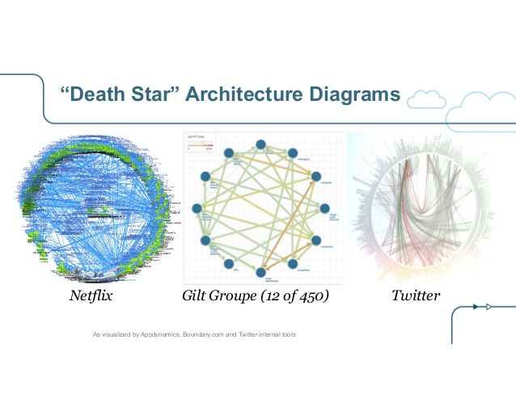

The Big NHS Computer - Erlang Edition
The Prime Minister said ..
“The possibilities are enormous if we can get this right”
... and then for the next 15 years ...
Talk through a programme gone bad: 2003 - 2013
Focus on the technology problems
Look at the role played by Erlang in the rescue: 2011 - 2017
Consider what this does and doesn't mean for the future
http://martinsumner.github.io/presentations/spine2_erlang.html#/
@masleeds
See Wikipedia
List of failed and overbudget custom software projects - Permanent Failures

The Spine Part - The supplier speaks ...
“It has made transformational healthcare applications available to approximately 1.3 million NHS healthcare staff across England, providing care to circa 50 million UK citizens.”
“20-plus customised NHS Spine applications ... combined cutting edge technologies to meet the demanding service level agreements and response times required ”
More of their own words
“The contract was (and continues to be) one of the largest IT programmes in the world, consuming over 15,000 man-years of effort to date ... Over 3,000 servers are hosted and supported”
“(The delivery) methodology is now an internationally recognised standard for complex software development programme delivery”
What did we build again?

What does this kind of success look like?
Around 50% of the original business case met
The system is stable when untouched
... and this makes it a success
Spine can release with £30m in transition costs alone
It costs over £50m per annum to keep the lights on
... and most people still think of it as a success

The people problem
Parkinsons' Law and the generation of work
Conway's Law and the dominance of contractual boundaries
Pournelle's Iron Law of Bureaucracy
Brooks's Law
The phony war of perception management
Anchoring
The technology problem
The hunt for evidence of slowness
Linear expectations
Infrastructure chosen through fear of latency not complexity
Scaling often reversed due to latency
Change costs on hitting limits
The maginot line - strength is easier to see than weakness
Security theatre
Data is in the system, not just the database
Races between redundancy protocols
Every problem looks like a network problem
Humans are anchored to the literal reading of logs
Network state management - timeouts, nagle, pools
Compounded by complexity, variety and contracts
“They shouldn't build these death stars any more. They keep getting blown up”

Planning the technology solution
Looked sideways. Looked backwards
Erlang gave vision of availability and software-driven scale
The power of small unified teams with a common goal

The Actor Model
Used Erlang products as building blocks - esp Riak
Used RabbitMQ (and Tornado) used a means to support Python ...
... with async message passing between actors
... with generalised behaviours
... and a small numbers of common paths
Scaling
Avoided logical bottlenecks
Response in callbacks - unless we can absorb back-pressure
Failure
Handle failure by processing elsewhere
No triage to determine operational process
Slow triage to determine cause
Automate failover globally by deep-ping of path
Network hops
Standardise protocols - AMQP/HTTP
Operational visibility of network hops ...
... Biggest speed-up is visibility
Automate
Remove human hands - other than to pause/reflect
Don't allow automation to excuse complexity
Security benefits of disconnection
Make rehearsal constant and natural
Discipline
No Silver Bullet - all be great designers
Logs as important as tests
Enforce opportunities to work from logs
Reason end-to-end and test end-to-end - invert the pyramid
What did/does it cost?
Took 100 people years from inception to 1-years service
Requires just over 100 commodity 1RU servers in live
Release costs are < 0.1% of previous release costs
90% reduction in operating costs
Total running team of 30 people supporting and ...
... Managing more than £10m pa of change backlog
Adding the same slownode resolves capacity issues
Does it work?
(Nearly) like-for-like functional replacement ...
99.999% available since go live
Supports over 300 message interactions, eight UI applications
45M messages a day
Provides accesss to 1.5bn records and documents
Aggregate reduction in wait time is over 800 working days each day
Positive Erlang Lessons
It led us to a new way of thinking about failure ...
... and about the boundary between network and application
Positive Erlang Lessons
Asyncronous message passing had a deep impact ...
... With standardised paths and behaviours
Positive Erlang Lessons
Per-process overheads and mistakes ...
... Regret not embracing it more deeply
It brought us closer to computer science ...
... and pushed us away from vendors
Woot! So government will learn from this right ....
“Be of the web not behind the web”
“Blighty slaps £100m spending cap on govt IT projects”
What if every 3-page webapp ....
Thousands of small projects - all of them poor value
Thank-You
http://martinsumner.github.io/presentations/spine2_erlang.html#/
@masleeds